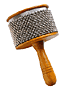
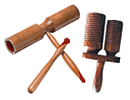
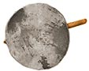
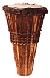
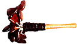
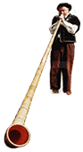
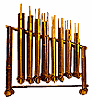
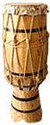

Adufe (также известный как квадратный pandeiro): Двухголовый квадратный рамочный барабан. В основном распространен в Португалии и Испании, но также встречается в Египте, Гватемале и Бразилии. Происхождение древнейшей, египетской разновидности относят к 1400 до нашей эры.
На внутренней раме adufe иногда крепят круглые колокольчики, камешки, пробки и т.п. В Бразилии звук извлекают ударами палки. В Европе играют руками и встречаются треугольные инструменты.
Agogo: Перкуссийный инструмент,
Звук извлекают палочкой: трением о ребристую поверхность одностороннего инструмента или ударами - по двухстороннему. В первом случае звук близок guiro, во втором - у каждой части собственный звук. В нигерийской музыке на нем обычно играют основной паттерн, тогда как в бразильской - это сольный инструмент с большим разнообразием ритмов.
Alaskan Fire Drum: Пожарный барабан с Аляски, созданный под влиянием барабанов эскимосов.
Играют как по голове, так и по ободу барабана.
Ashiko: Нигерийский (малийский?) одноголовый конический барабан,
После успеха написанной нигерийской звездой O.J. Ekemode мелодии 'Ashiko' в Америке и Латинской Америке это название стало использоваться для любых разновидностей конических одноголовых барабанов.
На внутренней раме adufe иногда крепят круглые колокольчики, камешки, пробки и т.п. В Бразилии звук извлекают ударами палки. В Европе играют руками и встречаются треугольные инструменты.

Afuche (также называемый cabasa): Современный перкуссийный инструмент, состоящий из небольшого скругленного цилиндра и рифленой металлической поверхности, сделанной из большого числа сплетенных металлических цепочек. К цилиндру прикреплена ручка. Звучание близко shekere.Agogo: Перкуссийный инструмент,

широко используемый в нигерийской и бразильской музыке. Agogo изготавливают из твердого, обычно красного дерева. В Бразилии в наши дни - чаще из металла.Звук извлекают палочкой: трением о ребристую поверхность одностороннего инструмента или ударами - по двухстороннему. В первом случае звук близок guiro, во втором - у каждой части собственный звук. В нигерийской музыке на нем обычно играют основной паттерн, тогда как в бразильской - это сольный инструмент с большим разнообразием ритмов.
Alaskan Fire Drum: Пожарный барабан с Аляски, созданный под влиянием барабанов эскимосов.

Эти барабаны cобраны из тонкого обруча из твердого красного дуба и головы, плотно обтянутой поверх рамы телячьей кожей. Твердая дубовая ручка также крепится к раме. Трудно представить насколько мощное резонирующее вибрато выдает этот инструмент. Вращение барабана изменяет высоту ноты.Играют как по голове, так и по ободу барабана.
Ashiko: Нигерийский (малийский?) одноголовый конический барабан,

собранный из деревянных планок. Слово ashiko на языке Yoruba значит «много времени». Сверху покрыт кожей козы(антилопы или реже коровы), закрепленной шнуровкой вокруг корпуса. Как и djembe производит резонирующий басовый тон, когда ударяют в центре, и высокий звенящий - по краям обода.После успеха написанной нигерийской звездой O.J. Ekemode мелодии 'Ashiko' в Америке и Латинской Америке это название стало использоваться для любых разновидностей конических одноголовых барабанов.
Afoxe(é) (также называемый xequre): перкуссийный инструмент из области Bahia, Бразилия. Звук извлекают перемещением цепочек из бусин вокруг полого корпуса, изначально изготавливаемого из gourd или кокоса (в наши дни - из пластика или металла).
Agbe(Agwe, Agüe): Термин Yoruba для разновидности shekere.
Первое упоминание о подобном инструменте встречается в описании корабля викингов Oseberg в IX веке. Исторически альпенгорн появился как способ коммуникации на больших расстояниях (аналогично африканским talking drums). Затем его стали использовать как фестивальный инструмент, в церковных службах и даже для поднятия морального духа во время войн.
Сегодня альпенгорн считается одним из национальных символов Швейцарии.
Angklung: Индонезийский инструмент, состоящий из настроенных бамбуковых трубок, подвешенных на раме. Когда их встряхивают, каждый сет трубок издает звук определенной высоты, похожий на звучание детских школьных колокольчиков.
Atabaque: Одноголовый бочкообразный или конический барабан, используемый в афро-бразильской музыке. Играют на группе из трех atabaque разного размера, называемых соответственно, от меньшего к большему, - le', rumpi, rum.
На некоторых барабанах играют руками, на других - палочками, либо произвольной комбинацией того и другого. На манеру игры оказывают влияние религиозные убеждения и стиль музыки.
Agbe(Agwe, Agüe): Термин Yoruba для разновидности shekere.

Ahoko: Ручной перкуссийный инструмент из Ганы. Скорлупу орехов прикрепляют к концу деревянной ручки, добиваясь отчетливого гремящего звука.
Alpenhorn/Alphorn: Длинная деревянная труба с изогнутым концом, распространенная в районе Альп. Аналогичные инструменты есть во многих горных районах Европы, к примеру, на Пиренеях, в Скандинавии и Шотландии. Длина альпенгорна от 5 до 15 футов. Он бывает цельным или состоит из двух частей.Первое упоминание о подобном инструменте встречается в описании корабля викингов Oseberg в IX веке. Исторически альпенгорн появился как способ коммуникации на больших расстояниях (аналогично африканским talking drums). Затем его стали использовать как фестивальный инструмент, в церковных службах и даже для поднятия морального духа во время войн.
Сегодня альпенгорн считается одним из национальных символов Швейцарии.

Angklung: Индонезийский инструмент, состоящий из настроенных бамбуковых трубок, подвешенных на раме. Когда их встряхивают, каждый сет трубок издает звук определенной высоты, похожий на звучание детских школьных колокольчиков.

Atabaque: Одноголовый бочкообразный или конический барабан, используемый в афро-бразильской музыке. Играют на группе из трех atabaque разного размера, называемых соответственно, от меньшего к большему, - le', rumpi, rum.
На некоторых барабанах играют руками, на других - палочками, либо произвольной комбинацией того и другого. На манеру игры оказывают влияние религиозные убеждения и стиль музыки.